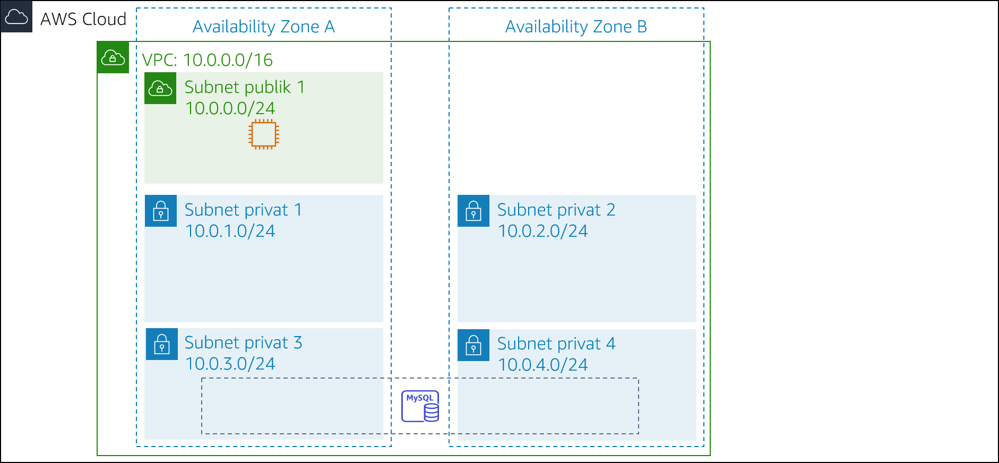
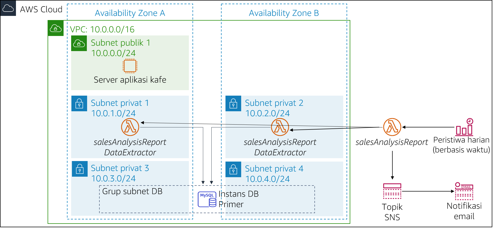

Bisnis kafe berkembang. Frank dan Martha ingin mendapatkan laporan penjualan harian untuk produk yang dijual dari situs web kafe. Mereka akan menggunakan laporan ini untuk merencanakan pesanan bahan dan memantau dampak dari promosi produk.
Ide awal Sofía dan Nikhil adalah menggunakan salah satu instans server web Amazon Elastic Compute Cloud (Amazon EC2) untuk menghasilkan laporan. Sofía menyiapkan pekerjaan cron pada instans server web, yang mengirimkan pesan email yang melaporkan penjualan harian. Namun, pekerjaan cron mengurangi kinerja server web karena bersifat intensif sumber daya.
Nikhil menyebutkan pekerjaan cron untuk Olivia, dan bagaimana hal tersebut mengurangi kinerja aplikasi web. Olivia menyarankan Sofía dan Nikhil untuk memisahkan tugas pelaporan penting nonbisnis dari instans server web produksi. Setelah Sofía dan Nikhil meninjau keuntungan dan kerugian dari pendekatan mereka saat ini, mereka memutuskan bahwa mereka tidak ingin memperlambat server web. Mereka juga mempertimbangkan untuk menjalankan instans EC2 terpisah, tetapi mereka khawatir tentang biaya menjalankan instans 24/7 bila hanya diperlukan untuk waktu yang singkat setiap hari.
Sofía dan Nikhil memutuskan bahwa menjalankan kode pembuatan laporan sebagai fungsi AWS Lambda akan berhasil, dan juga akan menurunkan biaya. Laporan itu sendiri dapat dikirim ke alamat email Frank dan Martha melalui Amazon Simple Notification Service (Amazon SNS).
Di lab ini, Anda akan mengambil peran Sofia untuk menerapkan kode laporan harian sebagai fungsi Lambda.
Di lab ini, Anda akan menggunakan AWS Lambda untuk membuat laporan penjualan kafe yang dikirim melalui email setiap hari melalui Amazon SNS.
Setelah menyelesaikan lab ini, Anda harus dapat menerapkan arsitektur nirserver untuk menghasilkan laporan penjualan harian yang menampilkan:
Ketika Anda memulai lab, arsitektur Anda akan terlihat seperti contoh berikut:

Pada akhir lab ini, arsitektur Anda seharusnya terlihat seperti contoh berikut:

Catatan: Di lab tantangan ini, instruksi langkah demi langkah tidak disediakan untuk sebagian besar tugas. Anda harus memikirkan cara untuk menyelesaikan tugas Anda sendiri.
Diperlukan waktu sekitar 90 menit untuk menyelesaikan lab ini.
Dalam lingkungan lab ini, akses ke layanan AWS dan tindakan layanan mungkin dibatasi untuk orang-orang yang diperlukan untuk menyelesaikan instruksi lab. Anda mungkin akan mengalami error jika mencoba mengakses layanan lain atau melakukan tindakan di luar yang dijelaskan di lab ini.
Di bagian atas instruksi ini, pilih Start Lab (Mulai Lab) untuk meluncurkan lab Anda.
Panel Start Lab (Mulai Lab) terbuka dan menampilkan status lab.
Tip: Jika Anda memerlukan lebih banyak waktu untuk menyelesaikan lab, pilih tombol Start Lab (Mulai Lab) lagi untuk memulai ulang pengatur waktu untuk lingkungan.
Tunggu hingga Anda melihat pesan Lab status: ready (Status lab: siap), lalu tutup panel Start Lab (Mulai Lab) dengan memilih X.
Catatan: Diperlukan waktu sekitar 15 menit untuk memulai lab ini.
Di bagian atas instruksi ini, pilih AWS.
Tindakan ini akan membuka Konsol Manajemen AWS di tab browser baru. Anda akan login ke sistem secara otomatis.
Tip: Jika tab browser baru tidak terbuka, banner atau ikon biasanya berada di bagian atas browser Anda dengan pesan bahwa browser Anda mencegah situs web membuka jendela sembulan. Pilih banner atau ikon lalu pilih Allow pop-ups (Izinkan sembulan).
Atur tab AWS Management Console (Konsol Manajemen AWS) agar ditampilkan bersama instruksi ini. Idealnya, Anda akan dapat melihat kedua tab browser sekaligus, sehingga Anda dapat mengikuti langkah-langkah lab dengan mudah.
Pada beberapa tugas selanjutnya, Anda akan bekerja sebagai Sofía untuk membuat dan mengonfigurasi sumber daya yang Anda butuhkan untuk menerapkan solusi pelaporan.
Kode untuk menghasilkan laporan sudah ditulis, dikemas, dan siap untuk Anda deploy ke AWS Lambda.
Unduh dua file berikut ini ke mesin lokal Anda:
Ekstrak setiap file .zip dan periksa isinya.
Jawaban akan direkam saat Anda memilih tombol Submit (Kirim) biru di bagian akhir lab.
Akses pertanyaan di lab ini.
Di halaman yang Anda muat, jawab pertanyaan pertama:
Catatan: Biarkan halaman web pertanyaan terbuka di tab browser Anda. Anda akan kembali ke sana nanti di lab ini.
Dalam tugas ini, Anda akan membuat fungsi Lambda DataExtractor yang mengekstrak data penjualan kafe dari basis data Amazon RDS. Jadi, fungsi Lambda dapat mengakses instans basis data RDS, Anda harus memperbarui grup keamanan basis data dengan aturan yang memungkinkan koneksi dari fungsi Lambda. Untuk mengaktifkan komunikasi ini, Anda akan membuat grup keamanan untuk fungsi Lambda dan menambahkannya sebagai aturan masuk ke grup keamanan instans RDS.
Buat grup keamanan untuk fungsi Lambda dengan pengaturan berikut:
LambdaSGPerbarui grup keamanan DatabaseSG dengan menambahkan grup keamanan fungsi Lambda baru Anda sebagai sumber kedua untuk aturan port TCP 3306 masuk yang sudah ada.
Buat fungsi Lambda dengan pengaturan berikut:
Function name (Nama fungsi): salesAnalysisReportDataExtractor
Runtime (Waktu aktif): Python 3.8
Role (Peran): salesAnalysisReportDERole
VPC:
Tip: Diperlukan waktu beberapa menit untuk membuat fungsi.
Lambda function to extract data from database (Fungsi Lambda untuk mengekstrak data dari basis data)salesAnalysisReportDataExtractor.lambda_handler30Dalam tugas ini, Anda akan membuat fungsi Lambda yang menghasilkan dan mengirimkan laporan analisis penjualan harian.
salesAnalysisReportLambda function to generate and send the daily sales report (Fungsi Lambda untuk menghasilkan dan mengirim laporan penjualan harian)salesAnalysisReport.lambda_handler30Laporan analisis penjualan menggunakan topik SNS untuk mengirim laporan ke pelanggan email. Dalam tugas ini, Anda akan membuat topik SNS dan memperbarui variabel lingkungan fungsi Lambda salesAnalysisReport untuk menyimpan topik Amazon Resource Name (ARN).
SalesReportTopicSales Report Topic (Topik Laporan Penjualan)topicARNUntuk menerima laporan penjualan melalui email, Anda harus membuat langganan email ke topik yang Anda buat di tugas sebelumnya.
Sebelum membuat kejadian pelaporan harian, Anda harus menguji bahwa fungsi Lambda salesAnalysisReport berfungsi dengan benar.
Tip: Anda tidak perlu khawatir tentang parameter, cukup masukkan nama kejadian dan terima kejadian pengujian
hello-worlddefault.
Tinjau log dari Amazon CloudWatch Logs untuk kedua fungsi Lambda:
Tinjau pekerjaan Anda untuk memastikan bahwa Anda telah menyelesaikan semua langkah.
Buka bagian Submitting your work (Mengirimkan pekerjaan Anda) dan ikuti langkah-langkah untuk mengirimkan pekerjaan Anda. Laporan pengiriman akan menunjukkan apakah Anda telah menyelesaikan langkah-langkah sebelumnya dengan benar.
Langkah terakhir dalam tantangan ini adalah menyiapkan pemicu yang akan menjalankan laporan setiap hari.
Petunjuk: Jika Anda kehabisan ide, lihat contoh ekspresi cron dalam Dokumentasi AWS. Tip: Gunakan waktu yang dekat dengan waktu Anda saat ini, tetapi ingat bahwa waktu harus ditentukan dalam Waktu Universal Terkoordinasi (UTC)!
Setelah Sofía selesai menguji pelaporan, dia membuat langganan email untuk Frank dan Martha. Frank dan Martha senang sekali menerima laporan harian pertama dari solusi nirserver.
Sofía senang karena telah mengotomatisasi pelaporan penjualan untuk kafe, yang akan terus membantu Frank dan Martha menganalisis penjualan harian dan merencanakan inventaris kafe. Dia juga senang karena berhasil mempelajari cara menggunakan AWS Lambda, Amazon SNS, dan Amazon EventBridge. Bahkan, Sofía berencana untuk menerapkan lebih banyak fitur pelaporan nirserver dan mengotomatisasi ke dalam aplikasi web kafe untuk membantu perkembangan kafe dan mengelola bisnis mereka.
Tip: Anda dapat mengirimkan pekerjaan Anda beberapa kali. Setelah Anda mengubah pekerjaan, pilih Submit (Kirim) lagi. Apa yang akan direkam untuk lab ini adalah pengiriman terakhir Anda.
Selamat! Anda telah menyelesaikan lab.
Sebuah panel dengan pesan ini akan muncul: DELETE has been initiated...** (PENGHAPUSAN telah dimulai)... You may close this message box now. (Anda dapat menutup kotak pesan ini sekarang.)
©2020 Amazon Web Services, Inc. dan afiliasinya. Hak cipta dilindungi undang-undang. Karya ini tidak boleh direproduksi atau didistribusikan ulang, seluruhnya atau sebagian, tanpa izin tertulis sebelumnya dari Amazon Web Services, Inc. Dilarang menyalin, meminjamkan, atau menjual secara komersial.